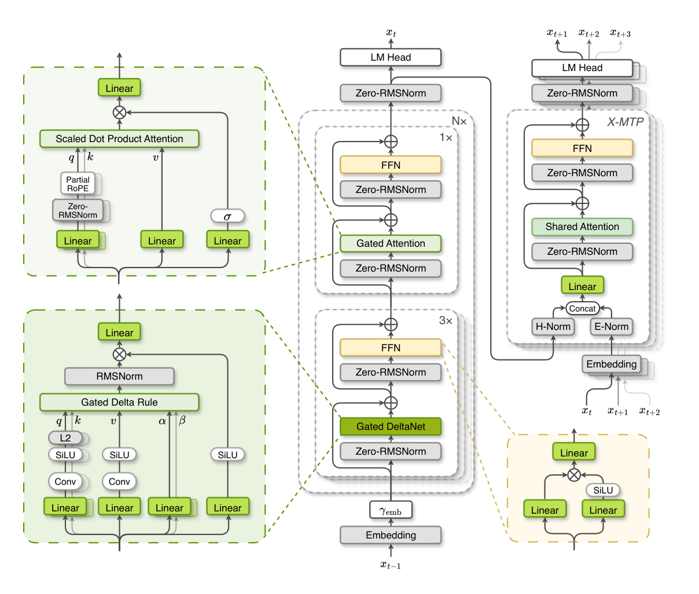

IronLLM 0.6B released
We release IronLLM-0.6B, an in-house language model—covering data, hybrid architecture, mid/post-training, and edge-ready deployment in one stack.
Tech reportXPENG Robotics Foundation Model Team
IRON
Iron is XPENG Robotics Foundation Model Team’s in-house model family—language, vision, and multimodal—built end to end from data to deployment. Explore each model below.
Model releases and product announcements—version history for Iron as it ships and iterates.
We release IronLLM-0.6B, an in-house language model—covering data, hybrid architecture, mid/post-training, and edge-ready deployment in one stack.
Tech reportWe release IronViT 1.0, a family of models built on softmax, hybrid and linear attention architectures. Results demonstrate strong performance across recognition, dense prediction, and multimodal understanding benchmarks.
Tech reportControl at every layer.
IronLLM-0.6B is more than a checkpoint. Three coordinated strengths let us improve capability, efficiency, and deployment as one system.
Training data combines in-house, open-source, and synthetic sources—processed through our pipeline for quality control and mixture so the final corpus stays consistent.
Architected natively for on-device scenarios: a hybrid attention backbone for efficient long context, an RMSNorm-free Light variant for extreme deployment, and X-MTP multi-token prediction for faster decoding.
Capability is shaped end to end—broad pre-training, long-context mid-training, then general SFT, domain-specialist training, and multi-domain distillation—so the recipe, not only the checkpoint, is owned in-house.
One model. A complete stack.
A visualization-first view of the structure—optimized for on-device long-context scenarios with lower memory footprint and faster inference.

Optimized for on-device long-context scenarios, we employ a 3:1 ratio of Gated DeltaNet to standard Attention across all 24 layers. This design retains global receptive fields while drastically reducing KV Cache consumption. It delivers faster on-device inference and a lower memory footprint, enabling our 0.6B model to handle complex long-context tasks smoothly on mobile devices.
A streamlined, RMSNorm-free variant built for extreme edge deployment. Dynamic Tanh (DyT) replaces every RMSNorm layer, while upper-bounded ReLUx activations and data-independent gating remove quantization-unfriendly sigmoid paths—maximizing inference throughput and quantization efficiency with minimal capability trade-off.
Our lightweight multi-token prediction module drafts multiple future tokens while sharing attention KV across prediction steps, avoiding repeated KV-cache replay. A lightweight verification head estimates confidence to adaptively accept drafts without rollback, accelerating decoding.
One model. Three training phases.
Pre-training builds broad capability, mid-training extends usable context, and post-training develops a general instruction model, strengthens specialist capabilities, and integrates them through on-policy distillation.
A three-stage recipe that shifts from broad web knowledge to STEM density, then reasoning refinement.
Establishes a robust linguistic and world knowledge base using massive general web corpora. This phase utilizes a learning rate warmup to stabilize early training dynamics, ensuring broad coverage of fundamental concepts and language patterns.
Significantly increases the density of high-quality STEM data (Math & Code). By maintaining a stable maximum learning rate, this stage effectively injects complex reasoning capabilities and logical problem-solving skills into the model’s foundation without catastrophic forgetting.
Maximizes the proportion of reasoning-intensive samples to sharpen logical precision. The learning rate decay schedule is applied here to consolidate learned capabilities, smoothing the loss landscape and ensuring stable convergence for superior downstream performance.
We adopt a three-stage training pipeline that progressively shifts from general web data to math, code, and reasoning-focused corpora, following a warmup–stable–decay learning rate schedule. Despite training on 6.2T tokens—less than 20% of Qwen3’s 36T pre-training budget—our base model achieves comparable performance to Qwen3.5-0.8B-Base across various core metrics.
Data mix and LR schedule across the three-stage curriculum.

Overview — data mix & LR schedule
We extend usable context while preserving short-context capability from pretraining, then strengthen specialized long-context skills with targeted synthetic data.
Two-stage long-context training extends the window from 4K to 32K then 64K, with a staged RoPE-base increase so longer context lands without erasing pretraining. Stages use about 42B and 21B tokens; stretching past 64K added little in our tests.
staged RoPE · two-stage extensionTo keep short-context strength from pretraining, we stay close to the final pretraining mixture and only upsample selected buckets for long-context learning.
We split the corpus into length-based buckets and tune sampling ratios with ablations, so long-context gains do not trade away competitive short-context benchmarks.
length buckets · replay mixSkills such as retrieval and counting are hard to learn from natural long corpora alone, so we curate synthetic long-context data aimed at those gaps.
Used in mid-training or SFT, this data lifts the target long-context abilities without degrading general or short-context benchmarks.
synthetic long data · no short-context tradeoffGeneral SFT establishes broad instruction-following ability; domain specialists build targeted strengths, which are integrated into one model through Multi-Domain On-Policy Distillation (MOPD).
We fine-tune the base model on several million high-quality, multi-domain conversation samples, including general QA, mathematics, code, and tool use.
This stage establishes broad conversational and instruction-following ability as the foundation for the specialist models and unified model that follow.
multi-domain conversations · assistant-response trainingStarting from the General SFT model, we independently train specialists for mathematics, code, instruction following, multiple-choice QA, and open-ended QA.
Each domain uses a tailored recipe of supervised fine-tuning, reinforcement learning, or both. RL uses GRPO with domain-specific verifiable rewards or a preference reward model.
five capability domains · tailored SFT / RLMulti-Domain On-Policy Distillation (MOPD) transfers complementary capabilities from the domain specialists back into the General SFT model, producing one unified assistant.
The student learns from specialist guidance on its own generated responses, while domain verifiers provide sequence-level rewards. This integrates specialist strengths while preserving broad general ability.
Light variant: skips specialist training and uses the IronLLM-0.6B specialists for MOPD.
student rollouts · specialist guidance · verifiable rewards
Data is the first model.
Our training corpus is built from a combination of in-house generated data, high-quality open-source datasets, and synthetic data.
All data sources are processed through a unified data pipeline, including quality filtering, deduplication, data enhancement, and mixture optimization, to ensure consistent quality across the final training corpus.
Our in-house pipeline enables continuous acquisition, processing, and optimization of large-scale training data, providing a scalable and reproducible data production capability.

Small footprint. Serious capability.
Selected post-training results for IronLLM-0.6B, followed by category-level comparisons and detailed benchmark scores.
Selected scores · non-thinking
Instruction following
General knowledge
Mathematics
Function calling
Category averages · non-thinking · hover a bar for the score.
Bold marks the best non-thinking score shown. Expanded cells show non-thinking / thinking for Qwen3, Qwen3.5, and MiniCPM5.
Modern vision systems have evolved along separate paths: from recognition and dense prediction to vision-language learning and robotics. IronViT unifies these capabilities into one efficient, generalist visual encoder built for the full visual stack.
Each visual capability is usually learned from a different objective, leaving practical systems to stitch together models with incompatible strengths.
IronViT brings diverse visual capabilities into a shared representation space, enabling one encoder to support semantic understanding, spatial perception, and embodied intelligence.
The final hybrid encoder keeps broad benchmark competitiveness while scaling better for high-resolution and long visual token sequences.
Three released architecture variants.
All variants use a 27-layer visual backbone with 1152 hidden width, 16 attention heads, 4304 MLP intermediate width, 2×16×16 spatiotemporal patch embedding, and a MAP global head.
Full self-attention preserves global token interactions across every layer, prioritizing representational capacity and benchmark performance.
Hybrid attention retains selected global-attention layers while replacing the remainder with efficient linear blocks, yielding a calibrated trade-off between accuracy and speed.
Linear attention minimizes sequence-scaling cost across the deployed encoder, making it the preferred variant for high-throughput inference on long visual-token streams.
From broad capability to efficient deployment.

IronViT consolidates diverse visual signals into a unified representation, then maps that capability into a compact family of deployable visual encoders.
IronViT brings semantic recognition, spatial perception, retrieval, and multimodal alignment into a shared representation space.
The consolidated representation is retained across attention variants, enabling the release family to span accuracy-first, balanced, and speed-first settings.
The resulting encoders are designed for high-resolution images, long visual-token streams, and downstream systems that require strong but efficient visual features.
Information density over raw scale.

The data engine prioritizes reliable visual evidence, reducing noise and redundancy so representation learning is driven by cleaner supervision.
Semantic and hierarchical organization improves coverage across categories, layouts, scenes, and visual structures required by generalist perception.
Target-domain enrichment aligns the corpus with downstream needs, supporting robust transfer across recognition, dense prediction, multimodal understanding, and embodied tasks.
One encoder. Full visual stack.
IronViT vs open visual encoders. Browse by evaluation family; charts below highlight key comparisons.
Recognition probe
Dense segmentation
Multimodal transfer
Robotic learning
Zero-shot classification uses the PE-aligned adapter with the PE-Core text tower and the standard 80-prompt ImageNet protocol. Retrieval reports Recall@1 on COCO and Flickr30k with decoupled image and text towers.
| Encoder | kNN | IN-1k | IN-v2 | IN-R | IN-A | IN-sketch | Avg. |
|---|---|---|---|---|---|---|---|
| SigLIP2-So400M/16-NaFlex | 85.28 | 83.81 | 77.75 | 95.78 | 85.56 | 75.99 | 83.78 |
| GenLIP-So/16 | 72.88 | — | — | — | — | — | — |
| C-RADIOv4-SO400M | 85.04 | 81.14 | 75.05 | 94.59 | 80.92 | 68.91 | 80.12 |
| DINOv3-L/16 | 85.42 | — | — | — | — | — | — |
| PE-Core-L/14 | 85.01 | 83.56 | 77.91 | 95.31 | 90.24 | 73.47 | 84.10 |
| Ours-Softmax | 85.82 | 83.27 | 76.91 | 94.13 | 81.99 | 71.18 | 81.50 |
| Ours-Hybrid | 85.37 | 82.88 | 76.20 | 93.48 | 79.89 | 70.22 | 80.53 |
| Ours-Linear | 84.90 | 81.59 | 74.58 | 90.68 | 72.11 | 67.22 | 77.24 |
| Encoder | COCO T→I | COCO I→T | Flickr T→I | Flickr I→T | Avg. |
|---|---|---|---|---|---|
| SigLIP2-So400M/16-NaFlex | 56.24 | 72.28 | 83.12 | 94.40 | 76.51 |
| C-RADIOv4-SO400M | 56.26 | 71.38 | 83.84 | 94.50 | 76.495 |
| PE-Core-L/14 | 56.98 | 76.04 | 85.74 | 95.80 | 78.64 |
| Ours-Softmax | 56.33 | 71.36 | 84.24 | 94.70 | 76.66 |
| Ours-Hybrid | 56.22 | 70.66 | 84.92 | 94.10 | 76.48 |
| Ours-Linear | 54.65 | 68.44 | 82.28 | 92.20 | 74.3925 |
Frozen visual encoders with lightweight readout heads probe recognition, dense semantics, and geometry. Classification reports ImageNet-1k linear probing.
| Encoder | Classification | Segmentation | Depth |
|---|---|---|---|
| IN-1k ↑ | ADE20K ↑ | NYUv2 ↓ | |
| SigLIP2-So400M/16-NaFlex | 87.45 | 44.48 | 0.459 |
| GenLIP-So/16 | 71.25 | 45.59 | 0.484 |
| C-RADIOv4-SO400M | 87.33 | 54.10 | 0.295 |
| DINOv3-L/16 | 87.07 | 52.86 | 0.320 |
| PE-Core-L/14 | 87.17 | 40.57 | 0.611 |
| Ours-Softmax | 87.35 | 52.97 | 0.339 |
| Ours-Hybrid | 87.12 | 52.60 | 0.343 |
| Ours-Linear | 85.98 | 50.28 | 0.407 |
Each visual encoder replaces the LLaVA-NeXT vision tower while keeping the Qwen2.5-7B-Instruct decoder, connector, data, and training schedule fixed.
| Benchmark | SigLIP2 | GenLIP | C-RADIO | DINOv3 | PE-Core | Ours-S | Ours-H | Ours-L |
|---|---|---|---|---|---|---|---|---|
| OCR Avg. | 57.94 | 61.34 | 57.73 | 41.90 | 57.43 | 61.52 | 61.14 | 56.17 |
| TextVQA | 68.16 | 70.55 | 66.40 | 47.25 | 66.83 | 68.89 | 67.86 | 62.92 |
| DocVQA | 71.38 | 77.30 | 70.99 | 51.46 | 72.93 | 76.99 | 76.34 | 68.57 |
| OCRBench | 57.40 | 62.50 | 57.60 | 36.60 | 54.80 | 64.20 | 62.90 | 56.30 |
| ChartQA | 72.32 | 74.64 | 73.44 | 57.72 | 72.64 | 75.68 | 75.80 | 72.40 |
| OCRBench v2 | 20.42 | 21.72 | 20.21 | 16.47 | 19.95 | 21.85 | 22.82 | 20.64 |
| Knowledge Avg. | 80.86 | 79.86 | 80.40 | 78.04 | 79.66 | 81.29 | 80.96 | 80.11 |
| ScienceQA | 82.53 | 80.57 | 81.40 | 79.63 | 82.08 | 82.06 | 81.99 | 81.40 |
| AI2D | 79.18 | 79.15 | 79.40 | 76.46 | 77.23 | 80.51 | 79.92 | 78.82 |
| Vision Avg. | 66.37 | 63.95 | 64.01 | 60.29 | 62.84 | 64.48 | 64.12 | 62.20 |
| RealWorldQA | 65.23 | 63.79 | 64.44 | 63.14 | 63.27 | 64.84 | 63.66 | 61.05 |
| POPE | 87.19 | 87.54 | 88.10 | 87.72 | 87.38 | 86.43 | 87.24 | 86.67 |
| MMVP | 54.00 | 52.00 | 54.67 | 46.67 | 52.67 | 52.00 | 50.00 | 50.00 |
| CV-Bench 2D | 68.34 | 67.36 | 68.83 | 63.38 | 68.00 | 66.88 | 65.82 | 63.99 |
| CV-Bench 3D | 63.33 | 68.42 | 69.50 | 61.00 | 68.83 | 66.08 | 66.00 | 65.25 |
| What's Up | 65.56 | 66.65 | 65.05 | 69.23 | 65.74 | 68.26 | 67.93 | 67.02 |
| HallusionBench | 60.94 | 60.50 | 61.38 | 58.46 | 58.90 | 63.24 | 61.29 | 61.74 |
| BLINK | 42.19 | 43.82 | 41.50 | 42.71 | 44.13 | 42.35 | 42.82 | 41.87 |
| CountBenchQA | 90.55 | 65.50 | 62.63 | 50.31 | 56.67 | 70.23 | 72.28 | — |
| General Avg. | 67.97 | 66.92 | 67.76 | 64.46 | 67.08 | 68.55 | 68.08 | 67.17 |
| GQA | 65.20 | 64.96 | 65.41 | 64.10 | 65.65 | 64.99 | 65.04 | 64.14 |
| MME | 1640.09 | 1609.74 | 1586.16 | 1492.04 | 1636.25 | 1650.76 | 1630.15 | 1588.83 |
| MMStar | 52.80 | 52.27 | 54.07 | 49.47 | 50.60 | 56.27 | 55.20 | 54.00 |
| SEEDBench-IMG | 74.89 | 74.00 | 75.00 | 72.37 | 74.51 | 74.18 | 74.27 | 73.53 |
| MMBench-dev-EN | 84.62 | 81.54 | 84.20 | 78.61 | 82.77 | 85.31 | 84.87 | 83.92 |
| MMMU | 48.29 | 48.29 | 48.57 | 47.62 | 47.14 | 48.00 | 47.62 | 48.00 |
| Total Avg. | 66.21 | 65.62 | 65.10 | 58.86 | 64.30 | 66.44 | 66.05 | 63.89 |
Frozen ViT encoders are evaluated on CortexBench to measure transfer to embodied policy learning across dexterous and tabletop manipulation tasks.
For CortexBench, ViT features are connected to a convolutional-pooling multi-layer MLP policy head. We report task success rates under the same input-resolution setting to assess robotic-learning transfer across diverse manipulation tasks.
| Encoder | Pen | Relocate | Assembly | BinPick | ButtonPress | DrawerOpen | Hammer | Avg. |
|---|---|---|---|---|---|---|---|---|
| SigLIP2-So400M/16-NaFlex | 73.33±8.33 | 42.67±9.24 | 77.33±18.90 | 66.67±6.11 | 64.00±8.00 | 100.00±0.00 | 57.33±8.33 | 68.76 |
| C-RADIOv4-SO400M | 74.67±2.31 | 66.67±6.11 | 97.33±4.62 | 73.33±12.22 | 89.33±4.62 | 100.00±0.00 | 97.33±2.31 | 85.52 |
| GenLIP-So/16 | 73.33±8.33 | 54.67±6.11 | 93.33±8.33 | 73.33±2.31 | 65.33±6.11 | 100.00±0.00 | 86.67±9.24 | 78.09 |
| DINOv3-L/16 | 73.33±6.11 | 42.67±9.24 | 94.67±9.24 | 77.33±8.33 | 88.00±4.00 | 100.00±0.00 | 96.00±4.00 | 81.71 |
| PE-Core-L/14 | 70.7±6.1 | 56.0±4.0 | 82.7±10.1 | 76.0±6.9 | 52.0±4.0 | 100.00 | 68.0±12.0 | 72.20 |
| Ours-Softmax | 77.3±2.3 | 65.3±6.1 | 96.0±6.9 | 82.7±4.6 | 86.7±4.6 | 100.0±0.0 | 94.7±6.1 | 86.10 |
| Ours-Hybrid | 77.3±4.6 | 60.0±4.0 | 97.3±4.6 | 85.3±12.9 | 81.3±8.3 | 100.0±0.0 | 92.0±4.0 | 84.74 |
Latency measurements on H200 GPUs with CUDA Graph enabled. Hybrid and linear attention variants target faster deployment without sacrificing benchmark competitiveness.